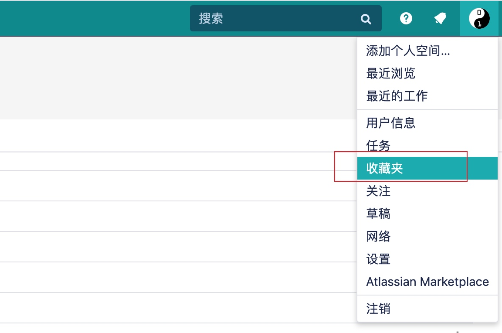

互联网是高科技/崇尚技术的公司，意味着所有问题都可以通过/间接通过技术来解决，遇到问题后，优先选择技术方式进行处理
人是不可靠的，尽可能使用规则和制度进行限定，保证稳定的产出质量
理解需求的能力
通常产品经理会把需求落实为文字+图片的形式即PRD（Product Requirement Document）放在wiki上让程序员先预习
预习的质量直接决定着理解需求的能力，从技术角度有以下方式提高预习的质量
站在产品角度思考问题，思考产品在写下这个wiki时的状态，估算出wiki中缺少的信息，并自行进行查找相关资料进行验证
熟悉wiki系统的使用，比如confluence这个wiki系统的收藏功能

点击头像下拉菜单中的收藏即可进入收藏列表

编码能力
熟悉公司框架，但实际编码并不需要占用太多时间，约20%，剩下时间都是在确定需求细节/技术实现方案、数据表设计等
所以业务开发对技术要求并不需要太深入，如果想深入技术开发，可以走技术专家路线
- 能够使用高效的编码工具提高工作效率，比如Jetbrain Idea等
- 了解通用问题解决的技术栈
运营能力
大部分需求的直接来源是来自公司运营，所以理解运营工作的目标和方式对程序开发也是至关重要的
运营的首要目标就是提高产品的人流量，并增加产品的用户留存率，一切以此为目的的需求都是合理的
通常是通过提高产品内容质量(文章质量、商品质量）来达到目标的，达到这个目标通常有技术和非技术手段两个方式来解决，但是总的目标是提高运营人员的工作效率，因为技术手段的规则是运营定的
产品能力
- 能够用axure画简单的产品原型图
- 能够使用omnigraffle等流程图工具画清楚产品的逻辑关系图
竞品分析能力
互联网产品通常有很多竞品，多了解这些竞品，对产品接下来产品变化的趋势判断很有帮助
比如流量型的产品，多参考业务成功的产品，比如 抖音、火山小视频、今日头条等的做法
统计能力
- 对比理想产出和实际产出、判断产品变化趋势
- 统计程序bug量、评估工资性价比（工资/公时)
协调能力
充分利用公司内部通讯软件，尽量减少当面沟通，可以间接提高工作效率，有以下几个原因
- 所有内容都在通讯软件上有记录，方便后期查找核对
- 不用预约时间、会议室（会议多方同时在场成本比较高)
一些工具
在工作过程中，有些至关重要的内容无法落实/延迟落实为文字，比如需求细节变更，有些内容作为旁听者很难一次全部理解，可以采用录音/录像的方式进行回放：
录音笔：推荐sony A10
相机：推荐Canon M6 Mark 二代

一些注意的点
永远以工作产出为导向，一切偏离产出的行为都是需要避免的
把人当工具、高效的利用在公司可以接触到的人，物尽其用，互为工具，在公司，所有的设备、人都是公司的资源。
参考资料
- https://www.axure.com/
- https://helpguide.sony.net/icd/pcma10/v1/en2/index.html
- https://www.omnigroup.com/omnigraffle
- https://www.atlassian.com/zh/software/confluence
- http://www.woshipm.com/pmd/192826.html
- https://helpguide.sony.net/icd/pcma10/v1/zh-tw/index.html
持续更新中...